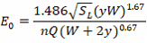

Drop Grate Inlets
The flow capture equation for a drop grate inlet located on-grade in a channel is the same as for a street grate except that the ratio EO of flow over the grate to total cross-section flow Q is given by:

where
W |
= |
side length of grate parallel to flow direction (ft) |
y |
= |
flow depth in the channel (ft) |
n |
= |
Manning's roughness coefficient for the channel |
SL |
= |
channel longitudinal slope (ft/ft) |
A cross slope SX of 1% is assumed unless the grate extends across the entire bottom width of a trapezoidal channel. In that case SX is taken as the slope of the channel’s side wall.
Drop grates located on-sag use the same weir and orifice equations as do street grates with the only difference being that for weir flow the effective length of the inlet’s sides (LW ) is the sum of the lengths of all four sides.
Drop Curb Inlets
Flow capture for drop curb inlets is computed the same as for curb opening inlets located on sag. The only difference is that the effective length of the opening is the total length of all four sides and the open area is the height of the opening times the total length of all four sides.